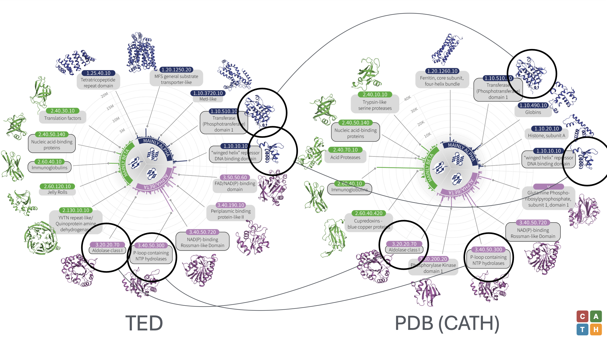
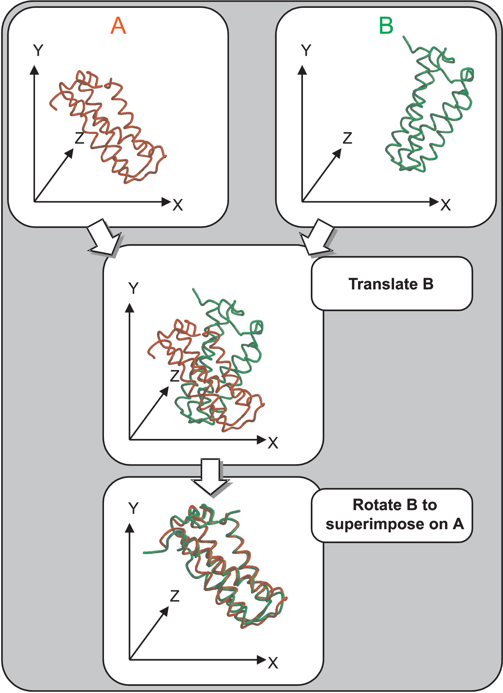
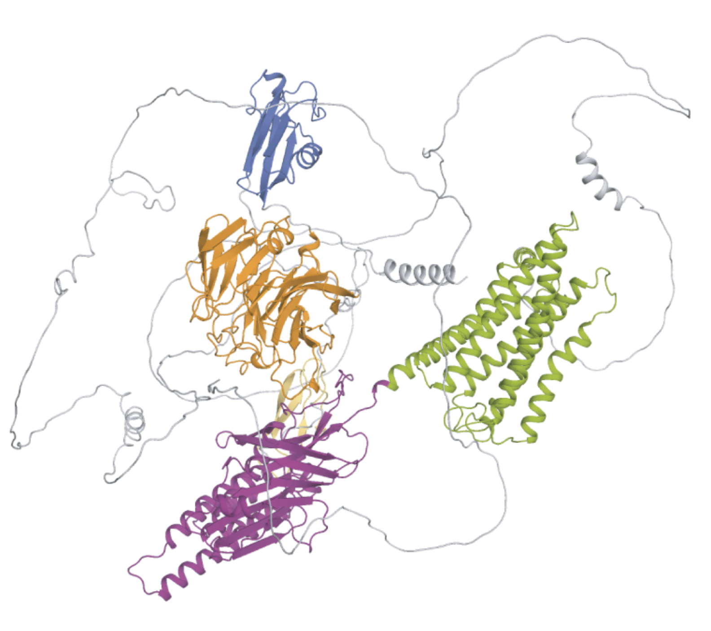
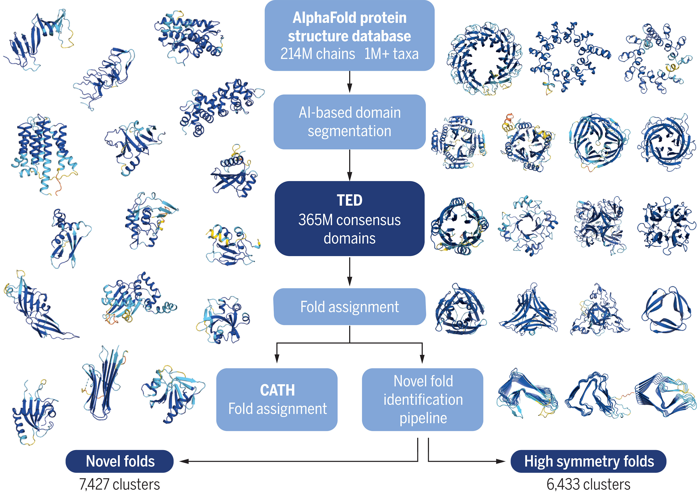

Protein Classification
By the mid-1990s the Protein Data Bank held roughly ten thousand structures, and the number was climbing fast. Christine Orengo and Janet Thornton, working at University College London, faced a problem that was equal parts intellectual and logistical: how should one organize this growing collection? Proteins plainly fell into families. Globins resembled other globins; immunoglobulin domains looked like other immunoglobulin domains. But the boundaries between families were blurry, the criteria for grouping were subjective, and two experts asked to sort the same set of structures often disagreed on where to draw the lines.1
1 Alexei Murzin, working independently at the MRC Laboratory of Molecular Biology in Cambridge, was confronting the same question and would publish SCOP the same year Orengo published CATH.
The difficulty was not merely taxonomic. The same fold appeared again and again in proteins with no detectable sequence similarity. The TIM barrel, an eight-stranded \((\beta/\alpha)_8\) cylinder, showed up in triosephosphate isomerase, in glycolate oxidase, in tryptophan synthase, in ribulose-phosphate epimerase. These proteins catalyze unrelated reactions on unrelated substrates. Either they diverged from a common ancestor so long ago that every trace of sequence relationship has been erased, or evolution independently arrived at the same structural solution multiple times. Both possibilities are plausible, and distinguishing between them remains one of the harder problems in molecular evolution. Classification had to accommodate this ambiguity without pretending to resolve it.
This chapter treats two interleaved questions. First, what hierarchies have been proposed for organizing protein structures, and what principles guide them? Second, how does one measure structural similarity in the first place, so that the classification can rest on quantitative ground rather than visual impression alone?
The SCOP hierarchy
Alexei Murzin and colleagues published the Structural Classification of Proteins (SCOP) database in 1995. Its organizing principle was evolutionary: structures belong together when they share a common ancestor. The classification is a strict hierarchy with four levels.
At the top sit the classes, defined by secondary-structure composition. “All-\(\alpha\)” proteins are built predominantly from \(\alpha\)-helices; “all-\(\beta\)” proteins from \(\beta\)-sheets; “\(\alpha/\beta\)” proteins alternate \(\alpha\)-helices and \(\beta\)-strands along the sequence, typically producing parallel \(\beta\)-sheets flanked by helices; and “\(\alpha+\beta\)” proteins contain both types of secondary structure in segregated regions rather than alternating them.2 Class assignment is the coarsest cut and often unambiguous, though borderline cases between \(\alpha/\beta\) and \(\alpha+\beta\) require judgment.
2 SCOP also includes smaller classes for multi-domain proteins, membrane and cell-surface proteins, and small proteins stabilized mainly by disulfides or metal ions.
Below class lies the fold level. Two proteins share a fold if their major secondary-structure elements are arranged with the same topology and spatial relationships. The Rossmann fold, for instance, groups all proteins containing a parallel \(\beta\)-sheet of at least three strands connected by \(\alpha\)-helices such that the strand order in the sheet is 321456. A shared fold does not imply shared ancestry; it may reflect physical constraints on how secondary structures pack, or convergent evolution toward a thermodynamically favorable architecture.
The superfamily level collects proteins that probably derive from a common ancestor but have diverged so far that sequence comparison alone cannot establish the relationship. The evidence is structural: similar folds combined with similar functional features or scattered sequence motifs at catalytic sites. Assignment at this level is an evolutionary hypothesis, not a proven fact.
Finally, the family level groups proteins with clear evolutionary relationships visible in sequence alignments, typically above 30% identity or with statistically significant sequence similarity detected by tools such as PSI-BLAST.
SCOP was manually curated. Murzin and a small team inspected each new structure, decided where it belonged, and placed it in the hierarchy. This manual approach had strengths: expert knowledge could resolve ambiguities that automated methods would handle clumsily. It also had an obvious weakness. As the PDB grew from ten thousand structures to over two hundred thousand, manual curation could not keep pace. SCOP2, a later revision, introduced a graph-based representation that relaxed the strict tree hierarchy, allowing proteins to participate in multiple relationships simultaneously. But the curation bottleneck persisted.
The CATH hierarchy
Orengo and Thornton’s CATH database (Orengo et al. 1997), published in 1997, took a different approach. Where SCOP relied almost entirely on expert judgment, CATH mixed automated structure-comparison algorithms with manual oversight. The name encodes its four-level hierarchy: Class, Architecture, Topology, and Homologous superfamily.
Class in CATH, as in SCOP, is determined by secondary-structure content. The three main classes are “mainly alpha,” “mainly beta,” and “mixed alpha and beta.” Assignment uses the fraction of residues in \(\alpha\)-helices versus \(\beta\)-strands, computed automatically from atomic coordinates using DSSP or similar secondary-structure assignment programs.
Architecture describes the gross spatial arrangement of secondary-structure elements, ignoring their connectivity. A four-helix bundle has a different architecture from a barrel or a sandwich. Architecture is assigned by a combination of automated comparison and visual inspection. This level has no direct analogue in SCOP; it captures shape without committing to a topological definition.3
3 The architecture level was partly inspired by the observation that proteins with different topologies can share the same overall shape. A \(\beta\)-sandwich, for instance, can be built with many different strand connectivities.
Topology, equivalent to fold in SCOP, considers both the arrangement and the connectivity of secondary-structure elements. Proteins share a topology if they can be superimposed with consistent chain direction through matched secondary structures. The structure comparison algorithm SSAP (Sequential Structure Alignment Program) was central to topology assignment: protein pairs scoring above a threshold in SSAP were grouped together.
Homologous superfamily, the deepest level, groups proteins that share a common evolutionary origin. Evidence comes from sequence similarity, structural similarity, and functional similarity considered jointly. The criteria are stringent: high SSAP scores combined with either sequence identity above 35% or convincing HMM-based detection of remote homology.

The difference in philosophy between SCOP and CATH is worth spelling out. SCOP privileges evolutionary reasoning; a human expert asks “did these proteins descend from a common ancestor?” and assigns accordingly. CATH privileges reproducibility and throughput; automated algorithms do most of the work, and human curation intervenes only at difficult boundaries. The two databases agree on most assignments but disagree on enough cases (roughly 20% of domain superfamilies, by various estimates) to remind us that protein classification is partly a matter of convention.
Measuring structural similarity

Any classification scheme must rest on a quantitative measure of how alike two structures are. The most obvious measure is the root-mean-square deviation (RMSD) of atomic positions after optimal superposition. Given two sets of \(n\) corresponding atoms with positions \(\{\bm{x}_i\}\) and \(\{\bm{y}_i\}\), the optimal rotation \(\bm{R}\) and translation \(\bm{t}\) minimize \[\label{eq:rmsd-fold-space} \text{RMSD} = \sqrt{\frac{1}{n}\sum_{i=1}^{n} \|\bm{R}\bm{x}_i + \bm{t}- \bm{y}_i\|^2}.\] Kabsch showed in 1976 that the optimal rotation can be found in closed form from the singular value decomposition of the cross-covariance matrix of the two coordinate sets.4
4 The Kabsch algorithm computes the \(3\times 3\) matrix \(H = \sum_i (\bm{x}_i - \bar{\bm{x}})(\bm{y}_i - \bar{\bm{y}})^\top\), takes its SVD \(H = U\Sigma V^\top\), and returns \(\bm{R}= V \mathop{\mathrm{diag}}(1,1,\det(VU^\top)) U^\top\). The determinant correction ensures a proper rotation rather than a reflection.
RMSD has two serious problems. First, it depends on the length of the alignment. Comparing a 50-residue domain to another 50-residue domain might give an RMSD of 1.5 Å, which is excellent; comparing two 300-residue proteins might also give 1.5 Å, which is extraordinary. The same number means different things at different lengths. Second, RMSD is sensitive to outliers. A single misaligned loop of ten residues displaced by 15 Å can inflate the overall RMSD from 2 Å to 4 Å, even though the structural cores superimpose well.
The TM-score, introduced by Zhang and Skolnick in 2004 (Zhang and Skolnick 2005), was designed to address both problems. It is defined as \[\label{eq:tmscore} \text{TM-score} = \frac{1}{L}\sum_{i=1}^{L_{\text{ali}}} \frac{1}{1 + \left(\dfrac{d_i}{d_0(L)}\right)^2},\] where \(L\) is the length of the target protein, \(L_{\text{ali}}\) is the number of aligned residues, \(d_i\) is the distance between the \(i\)-th pair of aligned residues after superposition, and \[\label{eq:d0} d_0(L) = 1.24\,\sqrt[3]{L - 15} - 1.8\] is a length-dependent distance scale.5 The Lorentzian form \(1/(1+(d_i/d_0)^2)\) gives full weight to well-aligned residue pairs (those with \(d_i \ll d_0\)) and negligible weight to pairs far apart. This makes TM-score insensitive to local structural deviations in poorly aligned regions, directly solving the outlier problem of RMSD.
5 The constants 1.24, 15, and 1.8 were chosen empirically so that the average TM-score of two randomly related proteins of any length is approximately 0.17.
TM-score lies in the interval \((0, 1]\), and because \(d_0\) grows with \(L\), the score is length-independent: a pair of 80-residue proteins and a pair of 400-residue proteins with the same global fold will receive similar TM-scores. Empirically, TM-score \(> 0.5\) indicates that two proteins share the same fold with high confidence. Below 0.3, proteins are almost certainly unrelated. The region between 0.3 and 0.5 is ambiguous, which is appropriate: fold space does not have sharp boundaries.
Structure alignment algorithms
Computing TM-score requires a structural alignment: a correspondence between residues in two proteins, together with the superposition that minimizes the distances between matched pairs. Finding the optimal alignment is computationally hard in general (it is an instance of the maximum-weight matching problem in three dimensions), so practical methods use heuristic strategies.
TM-align (Zhang and Skolnick 2005) works by iterating between two steps. Given a current alignment, it computes the optimal superposition by the Kabsch algorithm restricted to aligned residue pairs. Given a current superposition, it computes a new alignment by dynamic programming, using a scoring function derived from the TM-score formula. The procedure alternates until convergence, typically in three to five iterations. Multiple initial alignments seeded from secondary-structure matching or gapless threading ensure that the algorithm does not get stuck in a poor local optimum. TM-align runs in time roughly proportional to \(L^2\) and finishes in seconds even for large proteins.
SSAP (Sequential Structure Alignment Program), developed by Christine Orengo and colleagues for use in CATH, takes a different approach. Rather than comparing atomic coordinates directly, SSAP represents each residue by a vector of intramolecular distances to all other residues in the protein. Two proteins are compared by aligning these distance vectors using double dynamic programming: a first pass aligns individual residue environments, and a second pass assembles these local matches into a globally consistent alignment. SSAP scores range from 0 to 100; scores above 80 indicate the same fold, and scores above 70 suggest structural similarity worth investigating.6
6 SSAP is one of the oldest structure-comparison methods still in active use. Its double-dynamic-programming approach predates distance-matrix methods like Dali and coordinate-based methods like TM-align.
Dali, developed by Liisa Holm in the early 1990s, compares proteins by their intramolecular distance matrices. Each protein is reduced to an \(n \times n\) matrix \(D\) where \(D_{ij}\) is the distance between the \(C_\alpha\) atoms of residues \(i\) and \(j\). Two proteins are compared by finding the alignment that maximizes the similarity between submatrices of their respective distance matrices. The similarity is measured by a score that emphasizes contacts (short distances) and downweights long-range pairs. Dali uses a Monte Carlo optimization to search the space of possible alignments, making it slower than TM-align but sometimes more sensitive for detecting remote structural similarities. The FSSP database (Fold classification based on Structure-Structure alignment of Proteins) was built entirely from all-against-all Dali comparisons of the PDB.
Each of these algorithms has a regime where it performs best. TM-align is fast and gives a clean, interpretable score; it is the current standard for large-scale comparisons and benchmarking. SSAP captures local structural detail well and remains integral to the CATH pipeline. Dali excels at detecting distant relationships where the overall fold is similar but local deviations are large. In practice, large classification projects use multiple methods and reconcile disagreements manually or by majority vote.
Structural domains

Most proteins longer than about 200 residues fold into two or more distinct structural domains. A domain is a compact, semi-independent region of the polypeptide chain that folds into a stable three-dimensional structure and often functions as an evolutionary unit, appearing in different combinations across different proteins. Domain boundaries rarely split secondary-structure elements; they usually fall in loops connecting elements that contact each other within the domain but not across domains.
Classification operates at the domain level, not the chain level. A protein with three domains may have each domain assigned to a different fold in SCOP or topology in CATH. This is sensible from both structural and evolutionary perspectives: gene duplication, fusion, and recombination shuffle domains more frequently than they create entirely new folds. But it means that any classification pipeline must begin by parsing multi-domain proteins into their constituent domains, and this parsing step is itself nontrivial.
Manual domain assignment (as in early SCOP) uses visual inspection and expert knowledge of protein families. Automated methods attack the problem computationally. PDP (Protein Domain Parser) identifies domains by analyzing the contact map: it looks for clusters of residues that are in close spatial contact with each other but not with residues in other clusters. The algorithm recursively splits the chain at the boundary that minimizes inter-domain contacts. SWORD (Swift and Optimized Recognition of Domains) uses a similar principle but incorporates secondary-structure information and is optimized for speed on the scale of the entire PDB.7
7 Domain boundaries predicted by automated methods agree with expert assignments roughly 80–85% of the time. The remaining cases tend to be discontinuous domains, where the chain leaves one domain, contributes a segment to another, and returns.
Gene3D extends domain classification to the genome scale. Starting from CATH superfamily assignments for experimentally determined structures, Gene3D builds hidden Markov models for each superfamily and scans genomic sequences against these models. A match implies that the query sequence will fold into a structure assignable to that CATH superfamily. The result is a mapping from every gene in hundreds of sequenced genomes to its predicted domain architecture. This mapping connects structural classification (defined on 3D coordinates) to sequence annotation (defined on amino acid strings), creating a bridge between the two worlds.
Integrative classification with InterPro
No single classification system captures all aspects of protein function and evolution. Pfam provides sequence-based family definitions using profile HMMs trained on multiple sequence alignments. Gene3D provides structure-based superfamily assignments projected onto genomes. SUPERFAMILY does something similar using SCOP superfamilies as the reference. PROSITE defines short sequence patterns and profiles that identify functional sites, active-site residues, and binding motifs. Each database sees the protein universe from a different angle, and each misses relationships that others capture.
InterPro integrates these resources into a unified classification. For each protein, InterPro collects the annotations assigned by Pfam, Gene3D, SUPERFAMILY, PROSITE, PANTHER, CDD, and a dozen other member databases, resolves overlaps and conflicts, and produces a consensus domain annotation. A protein annotated as “Rossmann fold, NAD-binding superfamily” by Gene3D and matched to the “short-chain dehydrogenase” family by Pfam receives a merged InterPro entry that records both relationships and links them. The system is updated with each UniProt release, ensuring that newly sequenced proteins receive classification within weeks of deposition.
The value of integration is not just convenience. Different member databases use different algorithmic approaches and different evolutionary hypotheses. When they agree, confidence is high. When they disagree, the disagreement flags a protein that deserves closer inspection. InterPro makes these agreements and disagreements explicit, which is more honest than presenting any single classification as definitive.
Classification in the AlphaFold era
The AlphaFold Protein Structure Database, released in 2021 and expanded in 2022, contains predicted structures for over 200 million protein sequences. This changed the classification problem qualitatively. When the PDB held two hundred thousand experimental structures, classification was already challenging but computationally manageable. With two hundred million predicted structures, even fast algorithms like TM-align become expensive if applied naively in all-against-all mode.

The Encyclopedia of Domains (TED), developed by the Orengo group at UCL, addresses this challenge. TED takes AlphaFold-predicted structures, parses them into domains using automated boundary-detection methods, and assigns each domain to a CATH superfamily by structure comparison. Domains that cannot be matched to any known superfamily are clustered among themselves to identify potentially novel folds. The project found that the vast majority of AlphaFold-predicted domains belong to known CATH superfamilies, but several thousand clusters represent structural topologies not observed in the experimental PDB. Whether these are genuinely novel folds or artifacts of prediction errors is an open question that requires experimental validation.8
8 Preliminary analysis of TED clusters suggests that many “novel” folds come from dark proteomes: organisms or protein families that have received little experimental attention. Some of these predictions have since been confirmed by cryo-EM structures.
The availability of predicted structures also forces a rethinking of what classification means. SCOP and CATH were built on experimental structures, where the coordinates are known to a resolution of 1–3 Å and domain boundaries can be validated against electron density or diffraction data. AlphaFold predictions come with per-residue confidence scores (pLDDT), and low-confidence regions may correspond to disorder rather than a defined fold. A classification system that ingests predicted structures must account for confidence, treating high-pLDDT domains differently from low-pLDDT segments that may not adopt a stable tertiary structure at all.
The structure of fold space
Is the space of protein folds continuous or discrete? The question has no clean answer, and the answer depends on the resolution at which one looks. At the level of SCOP folds or CATH topologies, the number of distinct folds observed in nature appears to be limited: roughly 1,500 in SCOP, roughly 1,400 topologies in CATH, with the rate of discovery of genuinely new folds slowing each year. This suggests that evolution has explored a finite (though large) set of structural solutions, constrained by the physics of chain packing and the kinetics of folding.
But between any two folds, one can often find intermediate structures that blur the boundary. The \(\beta\)-barrel family, for instance, includes barrels with 6, 8, 10, 12, 14, and 16 strands, with varying shear numbers and strand tilts. Is a 16-stranded barrel the “same fold” as an 8-stranded barrel? SCOP says no; the topology is different. But the barrels form a continuum parameterized by strand number and shear, and any threshold for “same” versus “different” is arbitrary.9
9 Kolodny and colleagues showed in 2006 that if one embeds SCOP domains in a high-dimensional space using pairwise structural-similarity scores, the resulting cloud of points does not form well-separated clusters. Fold space looks more like a continuous manifold with regions of higher density than like a set of discrete islands.
This observation does not invalidate classification. Maps are useful even when the territory is continuous. But it should temper any expectation that there exists a single “correct” classification of protein structures. SCOP, CATH, and other systems are different maps of the same territory, drawn with different projections and for different purposes.
Chapter notes
The SCOP database was described by Murzin, Brenner, Hubbard, and Chothia in 1995. The most commonly cited version is SCOP 1.75, the last release curated in the original framework. SCOP2, which adopts a directed acyclic graph rather than a tree, was described by Andreeva et al. in 2014 and is maintained at scop.berkeley.edu. CATH was introduced by Orengo et al. in 1997 (Orengo et al. 1997) and has been updated continuously; the current version (CATH-Gene3D 4.3) classifies over 500,000 domains. Both databases are freely available and regularly used as gold standards for benchmarking structure-comparison methods.
The TM-score and TM-align algorithm were introduced together by Zhang and Skolnick (Zhang and Skolnick 2005). The 0.5 threshold for fold similarity was validated empirically against SCOP classifications by Xu and Zhang in 2010, who showed that TM-score discriminates same-fold from different-fold pairs with an accuracy exceeding 95%. A later analysis by Murzin noted cases where TM-score disagrees with SCOP assignments, particularly for long proteins with multiple domains; these cases highlight the dependence of all similarity metrics on the choice of which residues to include in the comparison.
The Kabsch algorithm for optimal superposition was published in 1976 and remains the standard method. Equivalent formulations using quaternions (by Horn, 1987) or eigenvalue decomposition (by Diamond, 1988) exist; all produce identical results and differ only in implementation details. For the singular cases where the SVD solution is ambiguous (when the cross-covariance matrix is degenerate), the determinant correction shown in the sidenote ensures a proper rotation.
Dali was introduced by Holm and Sander in 1993. The original FSSP database is no longer actively maintained, but the Dali server continues to provide on-the-fly structure comparisons and is widely used for finding structural neighbors of a newly determined structure. SSAP was first described by Taylor and Orengo in 1989 and refined in subsequent papers; its integration into the CATH pipeline is described in the 1997 CATH paper.
InterPro, first described by Mulder et al. in 2003, is maintained by the European Bioinformatics Institute and updated with each UniProt release. As of 2024, it integrates 14 member databases and provides annotations for over 47 million distinct protein sequences.
The Encyclopedia of Domains project was described by Sherborne et al. in 2024. Its finding that AlphaFold predictions contain thousands of potentially novel folds has stimulated experimental work aimed at validating these predictions, with early results from cryo-EM confirming several previously unobserved topologies. The question of how classification should handle predicted structures with varying confidence remains an active area of methodological development.
For a broader perspective on the geometry of fold space, see the work of Kolodny, Koehl, and Levitt (2005), who mapped SCOP domains into a continuous high-dimensional space and found evidence against a purely discrete view of folds. Taylor (2007) offered a different perspective, arguing that fold space has a fractal character: self-similar at multiple scales but not truly continuous. Whether one finds protein folds to be discrete or continuous depends, in the end, on the similarity threshold one chooses, which is another way of saying that the answer depends on the question being asked.